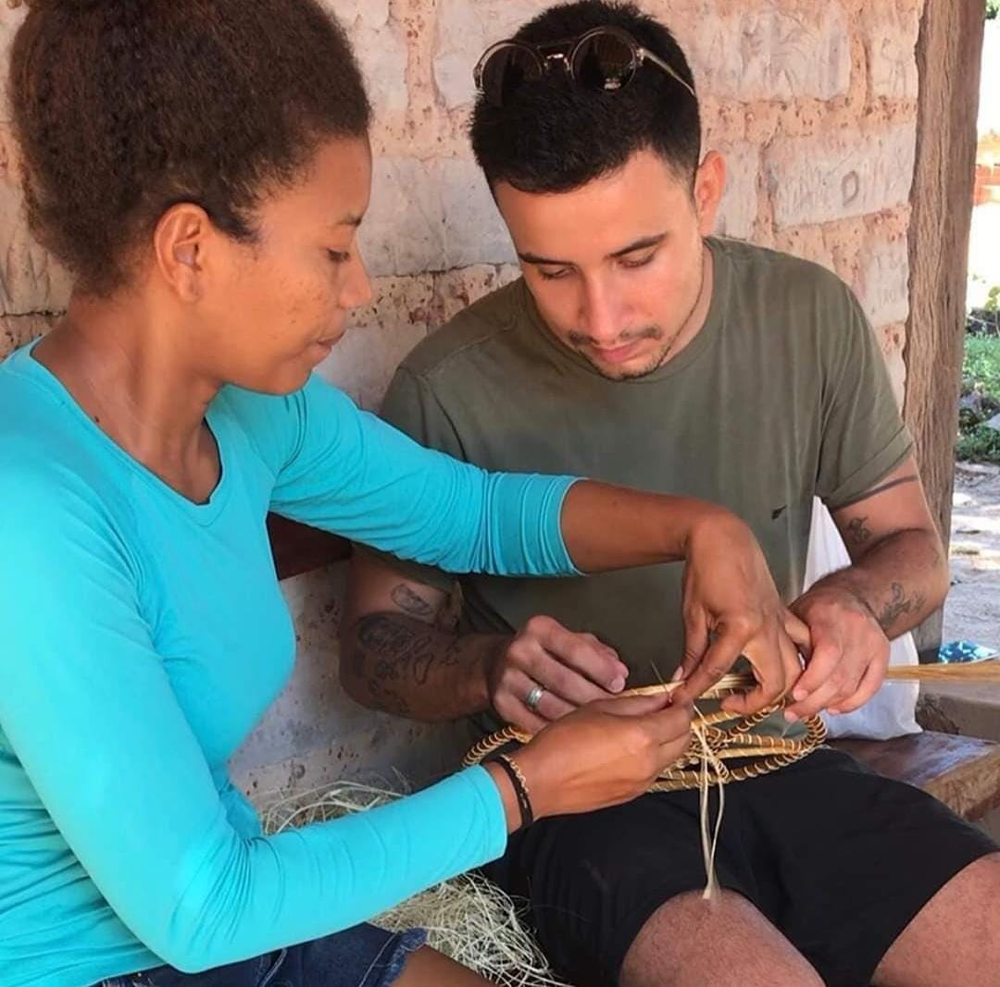
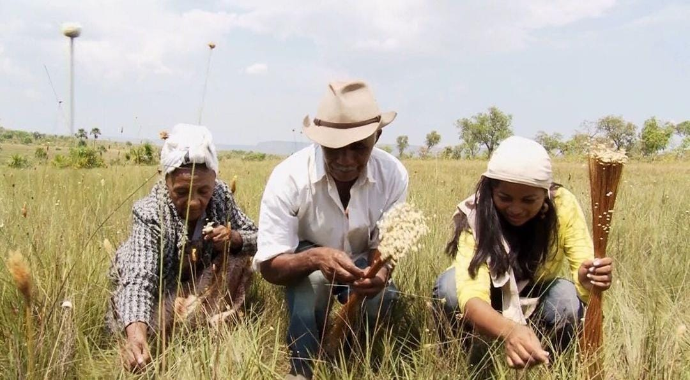

O destino para
experiências ecoturísticas
Do nascer ao pôr do sol, Estado oferece múltiplas opções a quem busca por vivências inéditas
A urgência do ser humano em sair da rotina o conduz à viajar, entretanto, os turistas estão buscando mais do que só descansar: experimentar vivências e fazer memórias. Diante disso, o turismo de experiência se destaca na busca de agregar valores e oferecer momentos únicos que compensam o tempo durante o percurso na estrada.
E nessa busca por sensações ímpares, no Tocantins, donos de negócios se empenham em oferecer experiências únicas aos turistas, como é o caso da empresa Rota Nativa, que aprimorou seu roteiro no Jalapão oferecendo o turismo de Base Comunitária, que possibilita ao visitante um mergulho profundo na cultura local com a comunidade quilombola, por meio de vivências na cantiga de roda, oficina de capim dourado, fat bike, hospedagem em casa de adobe e sorvetes do cerrado.
A prática do turismo no Tocantins está em franco desenvolvimento
“A ideia surgiu devido às vivências que eu fazia nas minhas viagens, eu vi a oportunidade de fazer do turismo um negócio de trabalho e, ao mesmo tempo, algo que poderia ajudar a minha comunidade, com um turismo sustentável”, relata a fundadora da Rota Nativa, Ilana Ribeiro.
A turismóloga, professora e doutora, Geruza Erig, afirma que a atividade turística no estado ainda está em progresso. “A prática do turismo no Tocantins está em franco desenvolvimento, incentivando a valorização das experiências que os turistas podem vivenciar nos atrativos, seja a contemplação do nascer do sol no alto da Serra do Espírito Santo até a vivência dentro das comunidades do Jalapão, que abrem suas casas para turistas, promovendo o diferencial do setor”, explica a professora, que trabalha com turismo no Tocantins há mais de 17 anos.
O geógrafo, bioterapeuta e proprietário da empresa Jalapão Ecolodge, Lúcio Flávio Marini, uniu a sensibilidade, busca pela conservação ambiental e uso sustentável, ao guia de ecoturismo, de forma a preservar os atrativos naturais, gerar renda para comunidades ao entorno e aproximar o ser humano da natureza. “O surgimento do Jalapão Ecolodge vem para pôr em prática a aplicação de ecotécnicas de reuso de materiais, de aplicação de princípios de bioconstrução, bioarquitetura e ecohospedagem, como um conceito de acampamento com um pouco mais de charme, alinhado à conservação do jalapão e oferecendo serviços turísticos que proporciona às pessoas um maior avivamento da busca interior, diante do contato com a natureza”, relata o geógrafo.
Uma das atividades mais buscadas do roteiro é a flutuação, que consiste em entrar no Rio Soninho, com um colete salva vidas e deixar a correnteza guiar. A modalidade trata-se de um momento de descontração e liberdade. Além disso, atividades como boia cross, escalaminhadas e passeios de bike em trilhas ecológicas estão inclusas no roteiro dentro da Serra da Catedral.
Por: Jéssica Sá

Veja o vídeo: